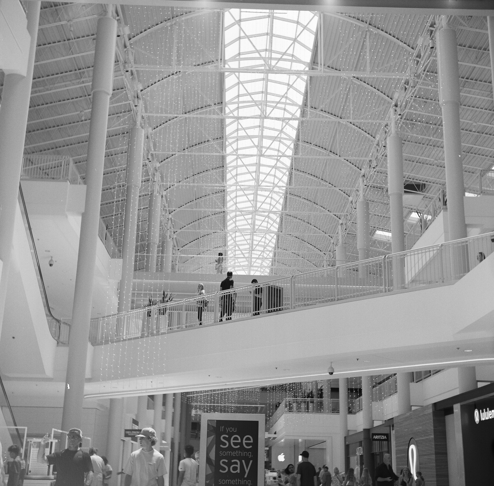
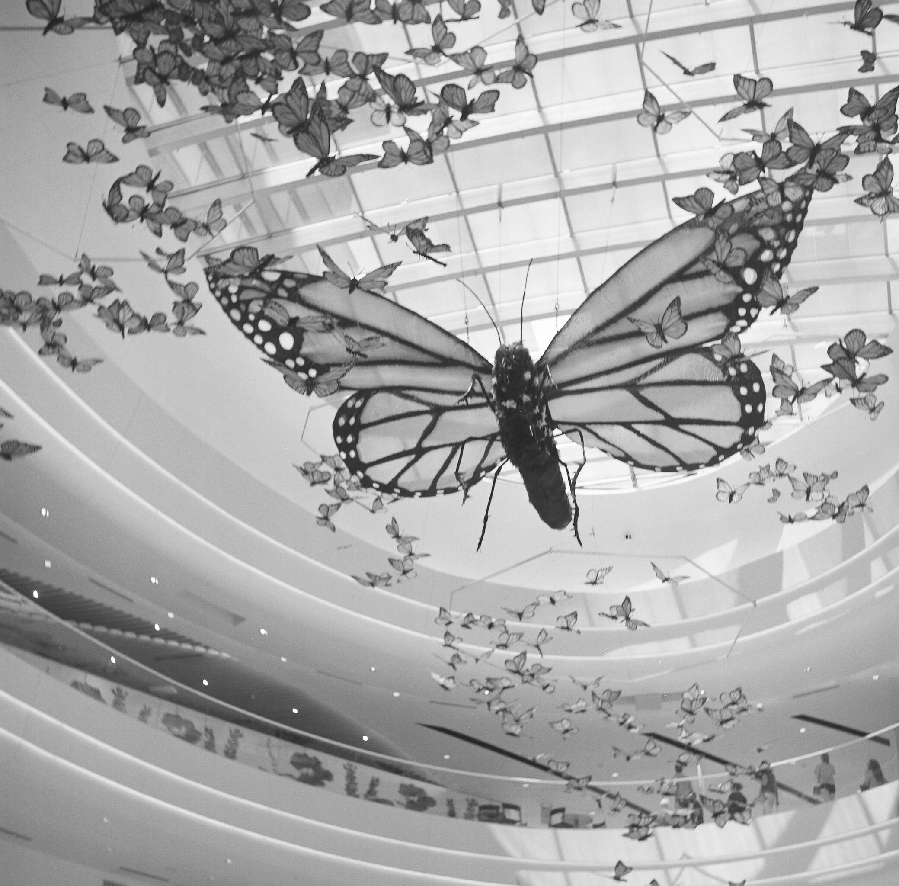
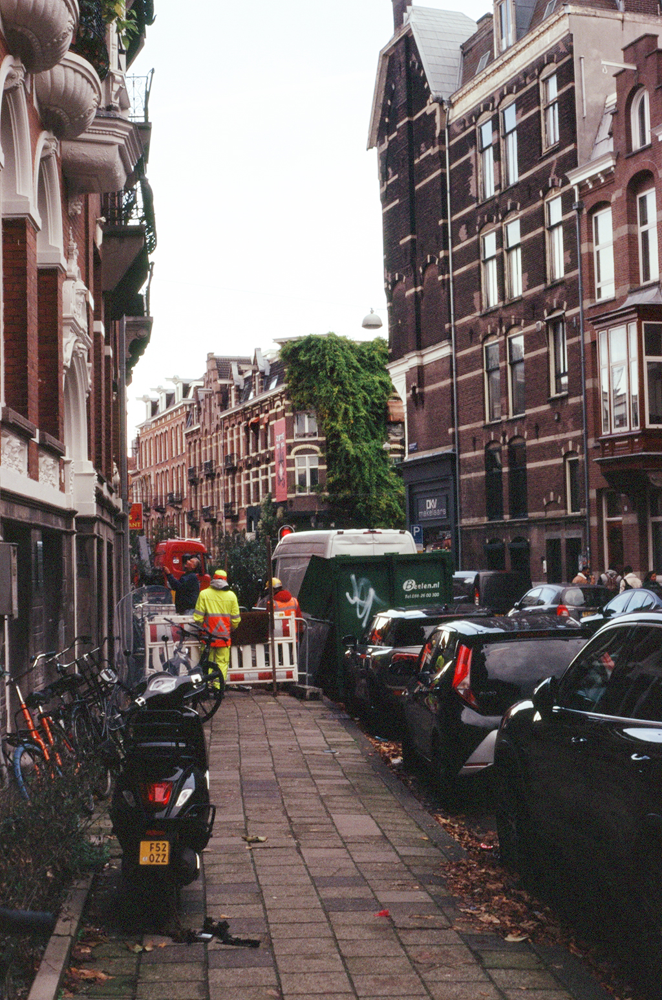
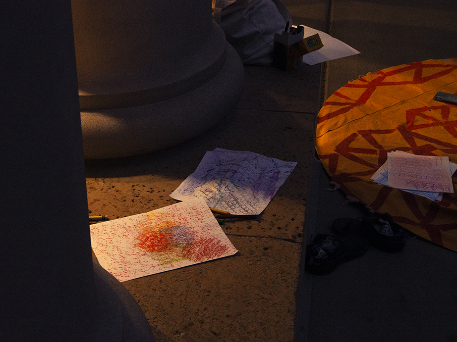
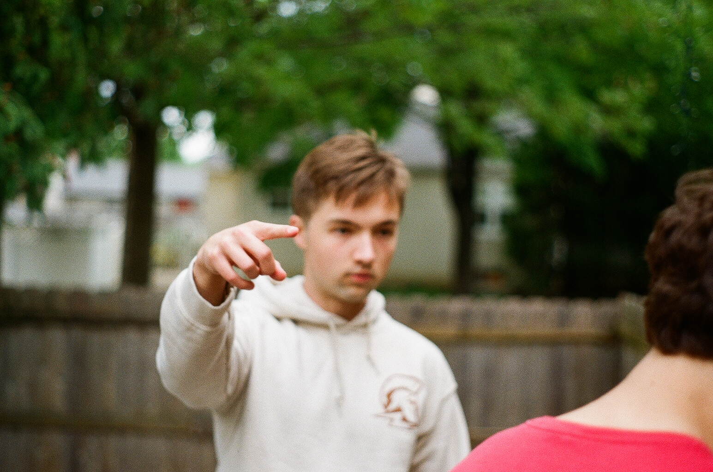
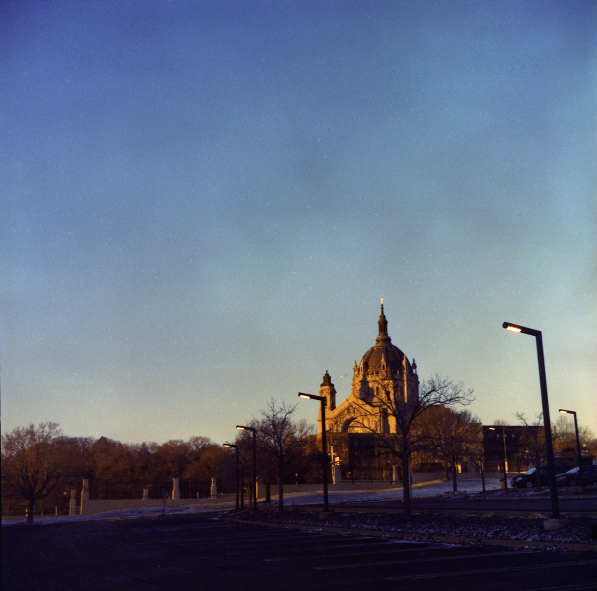
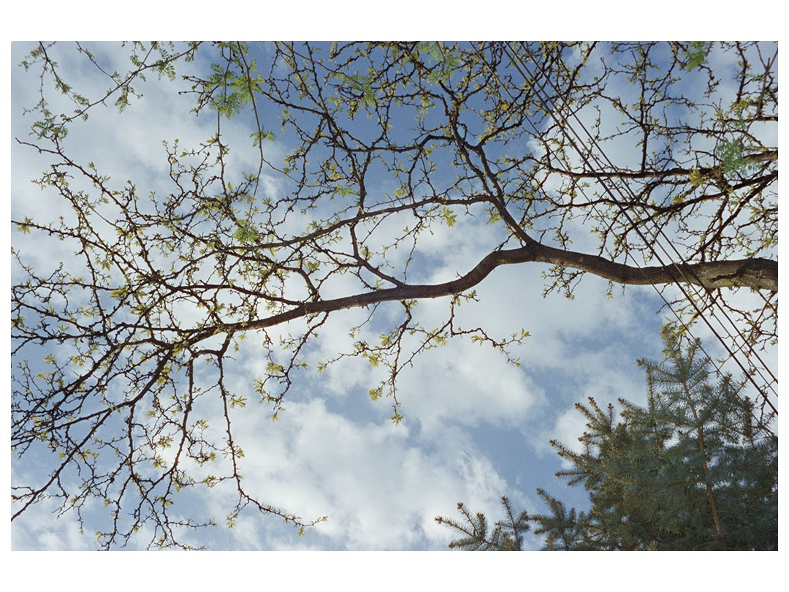
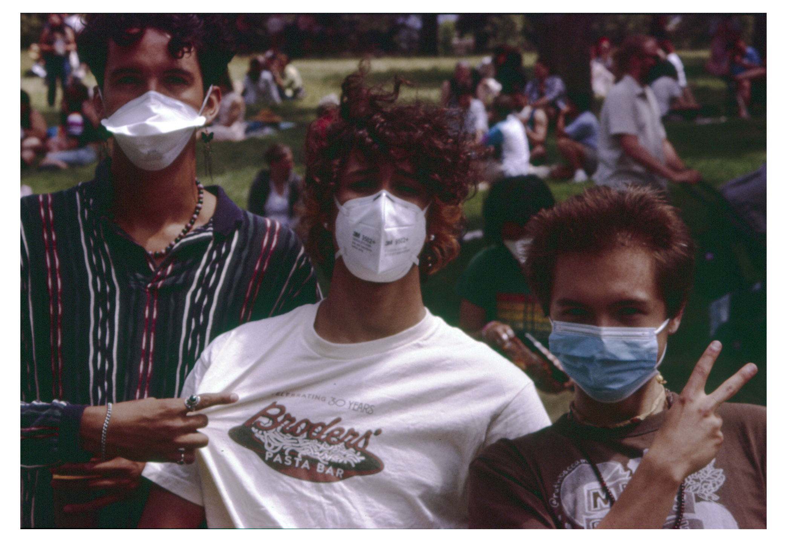
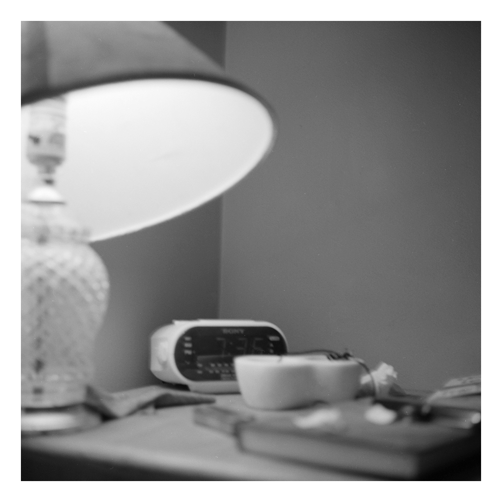

My cameras and film stocks
-
Film: BW (Illford HP5) Color (Kodak Portra)
- 35mm on Nikon F3
- Medium Format on Yashica 635
- 35 mm point and shoot Olympus ∞ Stylus
- Olympus OM-D E-M5 Digital Micro 4/3
My main medium I shoot is film as I like the proccess and the way the image comes out. Since 35mm is usually cheaper by the frame thats what I shoot the most but I do love dipping into medium format when I get the chance even if I only get 12 frames per roll.
As for digital I want to get back into shooting on my digital camera more but it just dosent hit the way film does. I do have some digital shots I'm really proud of I just need to get back into the habbit of digital.
Instagram















